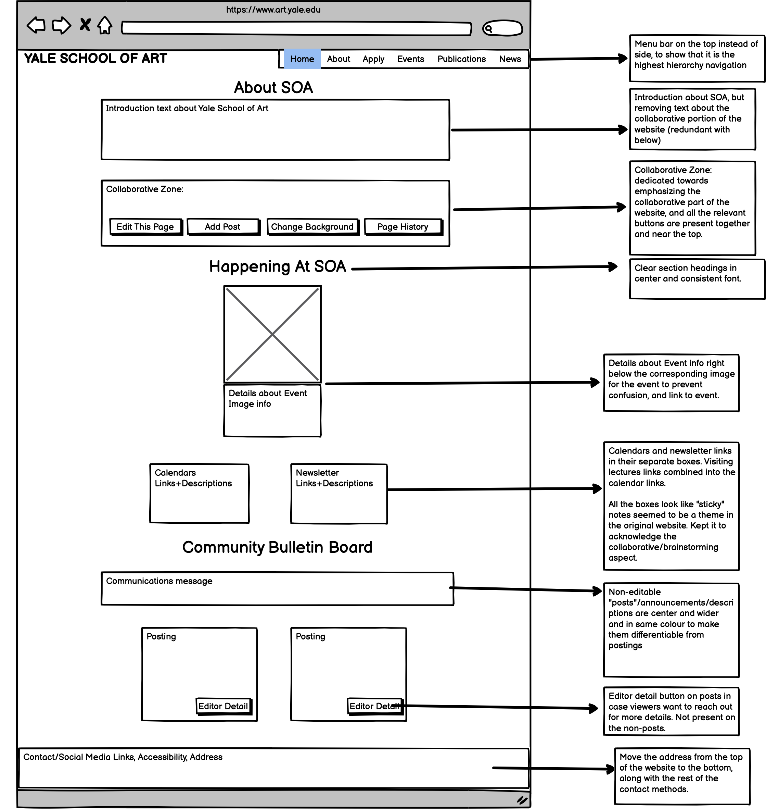
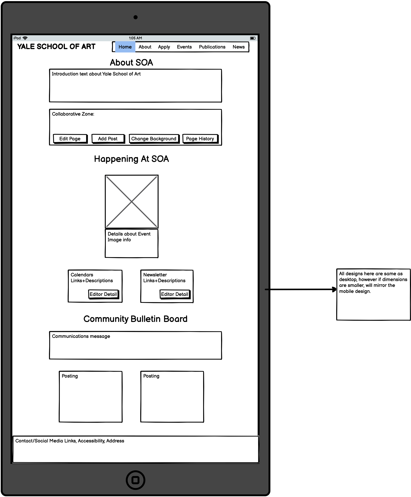
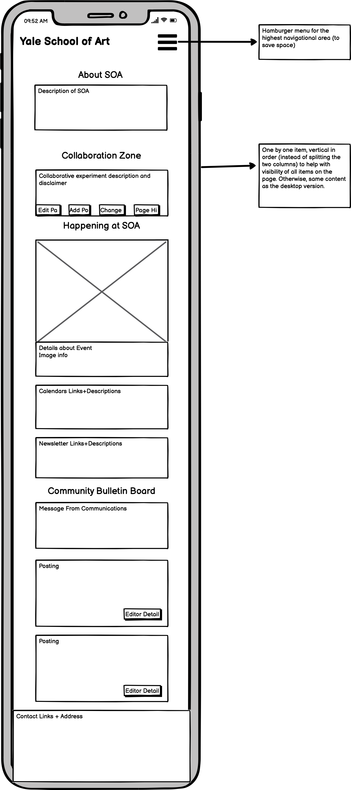
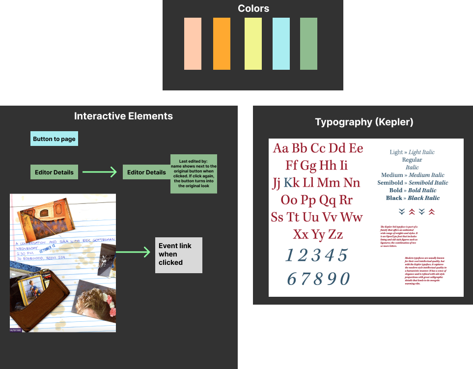
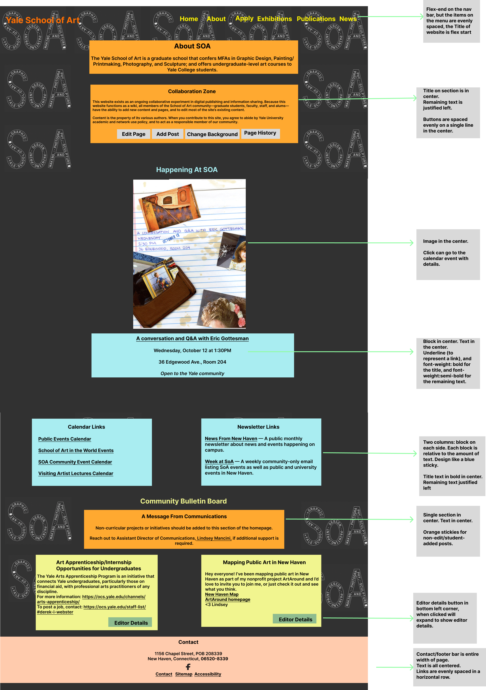
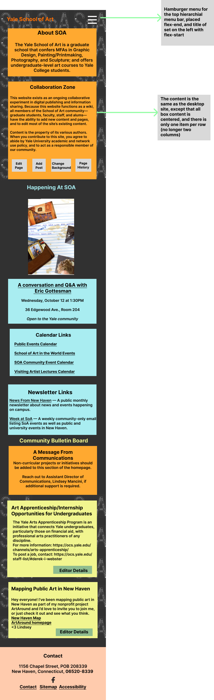

Visual Redesign: Lofi Prototypes
I created three lofi prototypes on Balsamiq, three hifi prototypes on Figma, one for each of the screen sizes (mobile, tablet, desktop).
I created a visual guide which contain main colors, typography, and reusable components’ different states.
I created a visual guide which contain main colors, typography, and reusable components’ different states.
Lofi Prototype for Desktop/Laptop

Lofi Prototype for Tablet

Lofi Prototype for Phone/Mobile

Visual Guide
Visual Guide featuring lighter sticky note inspired colors, Kepler font, and description of interactive elements.

Visual Redesign: Hifi Prototypes
Hifi Prototype for Desktop

Hifi Prototype for Tablet

Hifi Prototype for Phone
